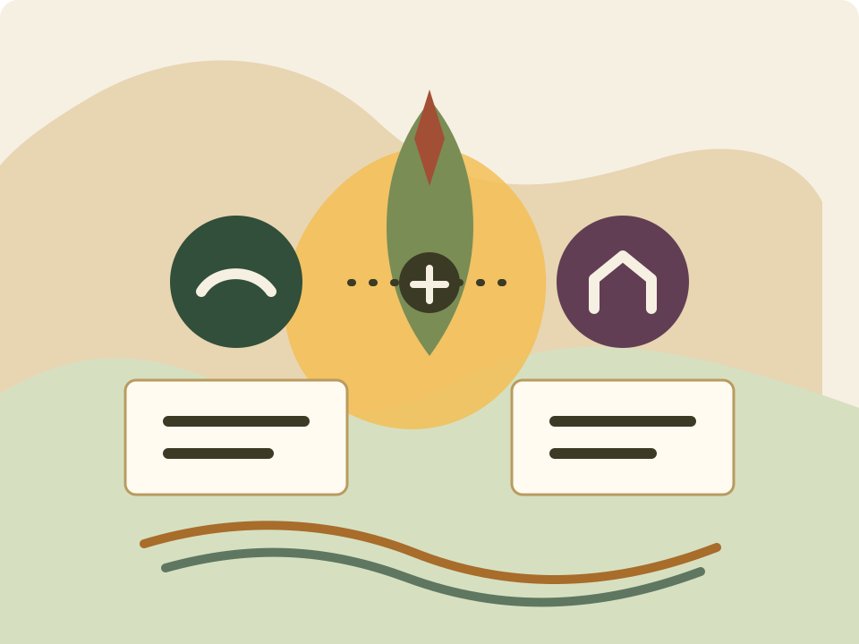

บางสัปดาห์ต่ำกว่า 10 คน จึงต้องช่วยทั้งหาคนใหม่ ชวนคนเก่า และติดตามหลังจบคอร์ส
ใช้ภายในวัดก่อน เริ่มจากงานจริง ไม่เริ่มจากศัพท์เทคนิค
ใช้ AI ช่วยขับเคลื่อน 2 ภารกิจสำคัญของวัด
คู่มือสำหรับพระและเจ้าหน้าที่ เพื่อใช้ AI ช่วยเพิ่มผู้เข้าปฏิบัติธรรมชาวญี่ปุ่น และสื่อสารงานระดมทุนสร้างเจดีย์ให้ต่อเนื่อง เป็นระบบ และน่าเชื่อถือ

สื่อสารต่อเนื่อง 12 เดือน พร้อมงานบุญใหญ่เป็นช่วง ๆ เช่น ทอดผ้าป่าเดือนหน้า
Insight จากข้อมูลจริง
ข้อมูลบอกว่าทีมควรเริ่มดูแลใครก่อน
มี Japanese 138 คน จากข้อมูลผู้เข้าร่วมช่วง 2025-05-01 ถึง 2026-05-25
กลุ่มนี้ควรทำ second-visit follow-up ให้กลับมาครั้งที่ 2 ภายใน 2-4 สัปดาห์
กลุ่มนี้รู้จักวัดแล้ว เหมาะกับ reactivation campaign แบบอบอุ่น ไม่กดดัน
กลุ่มนี้ควรชวนช่วยบอกต่อ ขอ testimonial หรือส่งข้อความชวนเพื่อน
สิ่งที่ข้อมูลรีวิวสะท้อน
คำที่พบเด่นมากคือ “สบาย”, “ความสุข”, “นิ่ง”, “ธรรมชาติ”, “สวน” และ “เสียง” แปลว่าการสื่อสารกับคนญี่ปุ่นควรเน้นความสงบ ความสบาย บรรยากาศธรรมชาติ และการเริ่มต้นได้โดยไม่ต้องกดดันตัวเอง
- หน้าเว็บคอร์สควรตอบความกังวลเรื่องมือใหม่ ภาษา การพักค้าง อาหาร และการนั่งนาน
- ข้อความชวนคนเก่าควรใช้ภาพจำเรื่องบรรยากาศสงบและการกลับมาพักใจ
- หลังจบคอร์สควรส่งแบบฝึก 5 นาทีที่บ้าน เพื่อเชื่อมจากประสบการณ์วัดไปสู่ชีวิตประจำวัน
- ควรเก็บข้อมูล “รู้จักกิจกรรมจากช่องทางใด” ให้ครบขึ้น เพราะข้อมูลช่องทางยังน้อย
Keyword ที่ควรใช้ในการสื่อสาร
สบาย
ความสุข
นิ่ง
ธรรมชาติ
สวน
เสียง
ฝึกต่อที่บ้าน
ไม่คาดหวัง
กลุ่ม
จำนวน
งานที่ควรทำ
One-time Japanese
45
ส่งข้อความวันที่ 1, 7, 14, 30 เพื่อชวนกลับมาครั้งที่ 2 และให้แบบฝึกสั้น ๆ
Lapsed Repeat Japanese
33
ทำแคมเปญ “กลับมาพักใจที่วัดอีกครั้ง” โดยไม่ทำให้รู้สึกผิดที่หายไป
New Recent Japanese
22
ดูแลให้ฝึกต่อเนื่อง ชวนคอร์สรอบถัดไปภายใน 2-4 สัปดาห์
Core Active Japanese
16
ขอ feedback, testimonial แบบไม่ระบุตัวตน และข้อความส่งต่อให้เพื่อน
ภารกิจหลัก
AI ช่วยตรงไหนบ้าง
01
จัดปฏิบัติธรรมชาวญี่ปุ่นทุกสัปดาห์
เปลี่ยนจากการโปรโมตเฉพาะหน้า เป็นระบบดูแลทั้งเส้นทาง: เห็นกิจกรรม สมัคร มาที่วัด ประทับใจ ฝึกต่อ กลับมาอีก และชวนเพื่อน
- เขียนสื่อญี่ปุ่นสำหรับเว็บไซต์ Instagram Facebook LINE
- แบ่งกลุ่มคนเก่าจากฐานข้อมูลและชวนกลับมาอย่างสุภาพ
- ทำ FAQ ลดความกังวลของคนที่ไม่เคยมาวัดไทย
- สร้างข้อความ follow-up หลังจบคอร์ส 1, 3, 7, 14, 30 วัน
02
ระดมทุนสร้างเจดีย์ให้สำเร็จใน 1 ปี
เปลี่ยนจาก “หาเงินเรื่อย ๆ” เป็นแคมเปญที่มีเรื่องเล่า จังหวะการสื่อสาร รายงานความคืบหน้า และคำอนุโมทนาที่ดูแลศรัทธาของญาติโยม
- เขียนเรื่องเล่าหลักของเจดีย์แบบสั้น กลาง ยาว
- วางแผนสื่อสาร 12 เดือนและโพสต์รายสัปดาห์
- เตรียมแคมเปญทอดผ้าป่า 4 สัปดาห์ก่อนงาน
- ทำรายงานความคืบหน้าและข้อความขอบคุณผู้ร่วมบุญ
วิธีใช้ AI แบบง่าย
สูตร prompt ที่คนในวัดใช้ร่วมกันได้
บทบาท
งานที่ให้ช่วย
บริบทวัด
รูปแบบผลลัพธ์
น้ำเสียงและข้อควรระวัง
ตัวอย่าง
คุณคือผู้ช่วยงานวัดไทยในญี่ปุ่น
ช่วยวางแผนหาผู้เข้าร่วมคอร์สปฏิบัติธรรมชาวญี่ปุ่นสุดสัปดาห์นี้
เป้าหมายคือ 30 คน แต่บางสัปดาห์มีผู้เข้าร่วมน้อยกว่า 10 คน
ขอเป็นแผน 7 วัน พร้อมข้อความภาษาญี่ปุ่นสำหรับคนใหม่และคนเก่า
น้ำเสียงสุภาพ อบอุ่น ไม่กดดันสำหรับผู้เริ่มต้น
เริ่มใช้ AI จากงานวัดที่ทำอยู่ทุกวัน
AI ไม่ใช่คนตัดสินแทนเรา แต่เป็นผู้ช่วยงาน
ให้คิดว่า AI เป็นผู้ช่วยร่าง ผู้ช่วยสรุป ผู้ช่วยจัดระบบ ผู้ช่วยแปล และผู้ช่วยเสนอทางเลือก คนในวัดยังเป็นผู้ดูแลความถูกต้อง ความเหมาะสม และความเมตตาของงานทุกชิ้น
เริ่มจากงานเล็ก
ให้ AI ช่วยสรุปข้อความ LINE, ทำตารางงาน, เขียนประกาศสั้น หรือแปลข้อความง่าย ๆ ก่อน
บอกบริบทให้ชัด
บอกว่าเป็นวัดไทยในญี่ปุ่น ผู้รับสารเป็นใคร งานนี้ต้องสุภาพ อบอุ่น หรือเป็นทางการแค่ไหน
ขอรูปแบบผลลัพธ์
ระบุเลยว่าอยากได้เป็นตาราง รายการ checklist ข้อความ LINE โพสต์ Facebook หรือภาษาญี่ปุ่น
ถามต่อให้ดีขึ้น
ถ้ายังไม่ดี ให้ขอปรับ เช่น “สั้นลง”, “อ่อนโยนขึ้น”, “ทำเป็น 3 เวอร์ชัน”, “เพิ่ม FAQ”
คำสั่งถามต่อที่ใช้บ่อย
กฎง่าย ๆ ก่อนส่งงานจริง
- อ่านข้อความของ AI อีกครั้งเสมอ โดยเฉพาะภาษาญี่ปุ่นและเนื้อหาธรรมะ
- อย่าใส่ชื่อ เบอร์โทร อีเมล หรือเรื่องส่วนตัวละเอียดอ่อนลงไปถ้าไม่จำเป็น
- ถ้าเป็นข้อความถึงญาติโยม ให้ตรวจว่าน้ำเสียงไม่กดดันและไม่ขายของ
- ให้ AI เสนอทางเลือกได้ แต่คนในวัดเป็นผู้ตัดสินใจขั้นสุดท้าย
AI ตามบทบาทหน้าที่
แต่ละฝ่ายใช้ AI ต่างกัน แต่ต้องเห็นภาพงานเดียวกัน
1. งานวัดทั่วไป
ใช้ AI ช่วยลดงานซ้ำ จัดระบบ สรุปข้อมูล ทำ checklist และเตรียมข้อความให้แต่ละฝ่ายทำงานเร็วขึ้น
2. งานภารกิจหลัก
ใช้บทบาทเดิมช่วย 2 ภารกิจ: จัดปฏิบัติธรรมชาวญี่ปุ่นทุกสัปดาห์ และระดมทุนสร้างเจดีย์ให้สำเร็จ
เจ้าอาวาส
- งานทั่วไป
- ให้ทิศทาง เป้าหมาย หลักคิด และกรอบการใช้ AI อย่างเหมาะสมกับงานวัด
- งานภารกิจ
- กำหนดเป้าหมายผู้ปฏิบัติธรรม 30 คน/สัปดาห์ และกรอบเรื่องเล่าเจดีย์ 50 ล้านบาทใน 1 ปี
ผู้ช่วยเจ้าอาวาส
- งานทั่วไป
- ใช้ AI สรุปงาน ติดตามผู้รับผิดชอบ ทำรายงานสถานะ และมองจุดติดขัดของทีม
- งานภารกิจ
- ดู dashboard รายสัปดาห์ แยกคนเก่า/คนใหม่ ติดตามแผนสื่อและแคมเปญเจดีย์
ฝ่ายเลขา
- งานทั่วไป
- สรุปประชุม ทำ minutes, action items, รายงาน, ตารางรถ, จองรถ และจัดสรรที่พัก
- งานภารกิจ
- ทำ run sheet คอร์สญี่ปุ่น รายชื่อห้องพัก รายชื่อรถรับส่ง และรายงานผลประชุมงานเจดีย์
ฝ่ายทะเบียน
- งานทั่วไป
- ดูข้อมูลผู้มาปฏิบัติธรรม ลงทะเบียน เข้าที่พัก รับกุญแจห้อง และความครบถ้วนของข้อมูล
- งานภารกิจ
- แบ่ง segment ผู้เข้าร่วม ทำรายชื่อ check-in/check-out และส่งข้อมูลที่ไม่ระบุตัวตนให้ทีมวิเคราะห์
พระอาจารย์เทศน์สอนอบรม
- งานทั่วไป
- ให้ AI ช่วยเตรียมโครงธรรมะ ตัวอย่าง คำอธิบายง่าย ๆ และคำถามทบทวน
- งานภารกิจ
- เตรียมบทสอนภาษาญี่ปุ่นอย่างระวังศัพท์ธรรมะ และคัดประเด็นจาก feedback มาปรับการสอน
ฝ่ายทำสื่อประชาสัมพันธ์
- งานทั่วไป
- ร่างโพสต์ LINE/Facebook/Instagram, headline, script คลิป และข้อความโปสเตอร์
- งานภารกิจ
- ทำ content calendar คอร์สญี่ปุ่น และสื่อสารเจดีย์รายสัปดาห์จากความคืบหน้า/เรื่องเล่าหลัก
ฝ่ายดูแลอาสาสมัคร
- งานทั่วไป
- จัดเวร ทำคู่มืออาสาใหม่ เขียนข้อความขอบคุณ และติดตามความต่อเนื่อง
- งานภารกิจ
- เตรียมอาสารับคนญี่ปุ่น ดูแล check-in แปลเบื้องต้น และอาสาช่วยงานทอดผ้าป่า/เจดีย์
ฝ่ายการเงิน
- งานทั่วไป
- สรุปรายรับรายจ่าย เตรียมรายงาน ทำคำอธิบายตัวเลขให้อ่านง่าย และ checklist เอกสาร
- งานภารกิจ
- ทำรายงานยอดเจดีย์แบบโปร่งใส แยกเป้าหมายที่เหลือ และข้อความอนุโมทนาผู้ร่วมบุญ
ฝ่ายดูแลสถานที่ งานช่าง
- งานทั่วไป
- ทำ checklist ซ่อมบำรุง แผนงานช่าง รายการวัสดุ และตารางตรวจพื้นที่
- งานภารกิจ
- เตรียมห้องพัก ห้องปฏิบัติธรรม ป้ายภาษาญี่ปุ่น จุดรับส่ง และอัปเดตงานก่อสร้างเจดีย์เป็นภาษาง่าย
ฝ่ายครัว
- งานทั่วไป
- วางเมนู คำนวณวัตถุดิบ ทำตารางครัว และ checklist แพ้อาหาร/ข้อจำกัดอาหาร
- งานภารกิจ
- เตรียมเมนูสำหรับผู้ปฏิบัติธรรมญี่ปุ่น และแผนครัวสำหรับงานบุญใหญ่ที่มีญาติโยมจำนวนมาก
ฝ่ายพิธีกร
- งานทั่วไป
- ร่าง script เปิดงาน ปิดงาน แนะนำกิจกรรม และคำกล่าวเชื่อมช่วงต่าง ๆ
- งานภารกิจ
- ทำคำกล่าวต้อนรับภาษาญี่ปุ่น และ script งานทอดผ้าป่าที่สุภาพ อบอุ่น ไม่กดดัน
ฝ่ายพิธีกรรม
- งานทั่วไป
- ออกแบบลำดับพิธี งานบุญ ตารางเวลา สิ่งของที่ต้องเตรียม และคำอธิบายพิธีให้เข้าใจง่าย
- งานภารกิจ
- ออกแบบพิธีในคอร์สญี่ปุ่นให้ไม่ทำให้คนใหม่รู้สึกเกร็ง และออกแบบรูปแบบงานบุญเจดีย์ให้มีความหมาย
สารถีและฝ่ายรถ
- งานทั่วไป
- จัดตารางรถ คนขับ เส้นทาง จุดรับส่ง เวลาเดินทาง และ checklist ความพร้อมของรถ
- งานภารกิจ
- วางแผนรับส่งผู้ปฏิบัติธรรมจากสถานี/สนามบิน และจัดรถสำหรับเจ้าภาพหรือผู้ร่วมงานบุญ
ฝ่ายดูแลเจ้าภาพ
- งานทั่วไป
- จัดข้อมูลเจ้าภาพ ข้อความต้อนรับ ข้อความขอบคุณ และการติดตามหลังงาน
- งานภารกิจ
- ดูแลเจ้าภาพงานเจดีย์ ทำข้อความอนุโมทนา รายงานความคืบหน้า และคำเชิญร่วมงานต่อเนื่อง
ฝ่ายระดมทุน คิดแคมเปญ
- งานทั่วไป
- วาง concept งานบุญ ทำแผนสื่อสาร กลุ่มเป้าหมาย และข้อความเชิญชวนที่ไม่กดดัน
- งานภารกิจ
- ทำแคมเปญเจดีย์ 12 เดือน แคมเปญทอดผ้าป่า 4 สัปดาห์ และรายงานผลหลังจบงานใหญ่
งานประจำสัปดาห์
ทำให้ AI กลายเป็นจังหวะงาน ไม่ใช่ลองเล่นครั้งเดียว
ดูฐานข้อมูลและแบ่งกลุ่ม
คนใหม่, คนเก่าที่หายไป, คนมาสม่ำเสมอ, คนที่น่าจะชวนเพื่อนได้
เขียนข้อความชวนกลับมา
ให้ AI ร่างข้อความญี่ปุ่นหลายโทน แล้วให้ผู้รู้ช่วยตรวจเฉพาะข้อความที่จะใช้จริง
ปล่อยสื่อหาคนใหม่
ทำโพสต์แยกตามช่องทาง: เว็บไซต์, Instagram, Facebook, LINE และข้อความให้คนเก่าชวนเพื่อน
ส่งคู่มือเตรียมตัว
ลดความกังวลเรื่องภาษา ศาสนา อาหาร การพักค้าง และมารยาทในวัดไทย
ดูแลประสบการณ์หน้างาน
ใช้ script ต้อนรับ คำอธิบายพิธีกรรม และแบบ feedback ที่เตรียมไว้
ขอบคุณและติดตามต่อ
ส่งข้อความวันที่ 1, 3, 7, 14, 30 พร้อมแบบฝึกสมาธิสั้น ๆ และคำชวนกลับมา
จังหวะระดมทุน
สื่อสารเจดีย์แบบต่อเนื่องและมีงานใหญ่เป็นช่วง ๆ
เป้าหมายคือระดมทุนเพิ่ม 50 ล้านบาทใน 1 ปี จึงควรมีทั้งการเล่าเรื่องระยะยาว และแคมเปญเฉพาะช่วง เช่น ทอดผ้าป่าเดือนหน้า
- ทุกเดือน: ธีมหลัก รายงานความคืบหน้า และแผนโพสต์ 4 ชุด
- ทุกสัปดาห์: เล่าเรื่อง เชิญร่วมบุญ อัปเดตงาน และอนุโมทนา
- ก่อนงานใหญ่: ทำ countdown 4 สัปดาห์ พร้อมข้อความชวนและ FAQ
- หลังงานใหญ่: รายงานผล อนุโมทนา และบอกขั้นต่อไปอย่างโปร่งใส
เป้าหมายที่ต้องหาเพิ่ม
50 ล้านบาท
ใช้ตัวเลขจริงอัปเดตในเว็บหรือรายงานรายเดือน เพื่อให้ทีมเห็นจังหวะงานเดียวกัน
Prompt Library
เลือกงาน แล้วคัดลอกไปใช้ได้ทันที
ทำ checklist ตามฝ่าย
คุณคือผู้ช่วยบริหารงานวัดไทยในญี่ปุ่น
ช่วยทำ checklist งานประจำสัปดาห์สำหรับบทบาทนี้:
[ใส่บทบาท เช่น ฝ่ายเลขา / ฝ่ายทะเบียน / ฝ่ายครัว / ฝ่ายรถ]
ขอผลลัพธ์เป็นตาราง:
1. งานที่ต้องทำ
2. ข้อมูลที่ต้องเตรียม
3. คนที่ต้องประสาน
4. กำหนดเวลา
5. จุดเสี่ยงที่ต้องระวัง
6. สิ่งที่ควรส่งต่อให้ฝ่ายอื่น
บริบทเพิ่มเติม:
[ใส่บริบทงานหรือกิจกรรมที่จะเกิดขึ้น]บทบาทนี้ช่วยภารกิจอะไรได้บ้าง
ช่วยวิเคราะห์ว่าบทบาทต่อไปนี้ควรใช้ AI ช่วยงานอะไรบ้าง
บทบาท: [ใส่บทบาท]
แบ่งคำตอบเป็น 2 ส่วน:
1. งานวัดทั่วไปที่บทบาทนี้ทำอยู่
2. งานภารกิจหลัก:
2.1 จัดปฏิบัติธรรมชาวญี่ปุ่นทุกสัปดาห์
2.2 ระดมทุนสร้างเจดีย์ให้สำเร็จ
สำหรับแต่ละส่วน ขอ:
- งานที่ AI ช่วยได้ทันที
- prompt ตัวอย่าง
- ข้อมูลที่ต้องเตรียม
- สิ่งที่ต้องให้คนตรวจทานก่อนใช้จริงประชุม รถ ที่พัก และลงทะเบียน
คุณคือผู้ช่วยฝ่ายเลขาและทะเบียนของวัด
ช่วยจัดระบบข้อมูลสำหรับกิจกรรมปฏิบัติธรรมสุดสัปดาห์
ข้อมูลที่มี:
- รายชื่อผู้สมัคร
- เวลาเดินทาง
- ห้องพัก
- การรับกุญแจ
- รถรับส่ง
- ผู้รับผิดชอบแต่ละจุด
ขอผลลัพธ์เป็น:
1. ตาราง check-in/check-out
2. ตารางจัดห้องพัก
3. ตารางรถรับส่ง
4. รายการคำถามที่ข้อมูลยังไม่ครบ
5. ข้อความแจ้งผู้เข้าร่วมแบบสุภาพ
6. checklist สำหรับทีมงานหน้างานแบ่งกลุ่มผู้เข้าร่วมจาก JSON
คุณคือผู้ช่วยวิเคราะห์ข้อมูลผู้เข้าปฏิบัติธรรมของวัดไทยในญี่ปุ่น
ให้วิเคราะห์โดยไม่เปิดเผยชื่อบุคคล และไม่อ้างถึงเรื่องส่วนตัวละเอียดอ่อนในข้อความสื่อสาร
จากข้อมูล JSON นี้ ช่วยแบ่งผู้เข้าร่วมชาวญี่ปุ่นเป็น segment:
1. One-time Japanese: มา 1 ครั้ง
2. New Recent Japanese: มาไม่เกิน 2 ครั้ง และ last_visit ภายใน 90 วัน
3. Lapsed Repeat Japanese: มา 2 ครั้งขึ้นไป แต่ last_visit เกิน 180 วัน
4. Core Active Japanese: มา 6 ครั้งขึ้นไป และ last_visit ภายใน 90 วัน
5. Deep Practitioner: มา 6 ครั้งขึ้นไป แต่ไม่ได้ active ภายใน 90 วัน
สำหรับแต่ละ segment ขอ:
- จำนวนคน
- insight หลักจาก reviews
- friction ที่น่าจะมี
- action ที่ทีมวัดควรทำใน 7 วัน
- ข้อความ follow-up ภาษาญี่ปุ่น 2 แบบ
ข้อมูล:
[วาง JSON ที่ตัดข้อมูลส่วนตัวแล้ว]หาแนวสื่อจากรีวิว
ช่วยวิเคราะห์ review text ของผู้เข้าร่วมคอร์สปฏิบัติธรรมชาวญี่ปุ่น
ขอผลลัพธ์:
1. หัวข้อที่ผู้เข้าร่วมพูดถึงบ่อยที่สุด
2. สิ่งที่ทำให้ประทับใจ
3. สิ่งที่ทำให้กังวลหรือยาก
4. ภาษาที่ควรใช้ในโพสต์ประชาสัมพันธ์
5. FAQ ที่ควรเพิ่มบนหน้าเว็บ
6. ตัวอย่างโพสต์ภาษาญี่ปุ่น 5 โพสต์
ข้อกำหนด:
- อย่าเปิดเผยชื่อบุคคล
- อย่าใช้เรื่องส่วนตัวละเอียดอ่อนเป็นข้อความชวน
- ใช้ insight แบบ aggregate เท่านั้น
Review text:
[วาง review text ที่ anonymized แล้ว]ชวนคนเก่ากลับมา
ช่วยเขียนข้อความภาษาญี่ปุ่นสำหรับชวนผู้ที่เคยมาปฏิบัติธรรมหลายครั้ง
แต่ไม่ได้กลับมานานกว่า 180 วัน
บริบท:
- วัดไทยในญี่ปุ่น
- คอร์สเป็น weekend meditation retreat
- ต้องการชวนกลับมาอย่างอบอุ่น ไม่กดดัน
- insight จากรีวิวคือหลายคนชอบความสบาย ความสงบ ธรรมชาติ และบรรยากาศของวัด
ขอ 3 เวอร์ชัน:
1. สั้นมากสำหรับ LINE
2. กลางสำหรับอีเมลหรือข้อความส่วนตัว
3. เวอร์ชันชวนมาคอร์สพิเศษหรือ theme retreat
ห้ามใช้ถ้อยคำที่ทำให้รู้สึกผิดที่ไม่ได้มาชวนกลับมาครั้งที่ 2
ช่วยเขียนข้อความภาษาญี่ปุ่นสำหรับผู้ที่มาคอร์สปฏิบัติธรรมครั้งแรกแล้ว
เพื่อชวนให้กลับมาครั้งที่ 2
เป้าหมาย:
- ทำให้รู้สึกว่าการกลับมาครั้งที่ 2 เป็นการฝึกต่ออย่างเป็นธรรมชาติ
- ไม่กดดัน
- ชวนให้ฝึกต่อที่บ้านวันละ 5 นาที
- เชิญกลับมาวัดเมื่อพร้อม
ขอ:
1. ข้อความวันที่ 1 หลังจบคอร์ส
2. ข้อความวันที่ 7
3. ข้อความวันที่ 14
4. ข้อความวันที่ 30
5. แบบฝึกสมาธิสั้น ๆ สำหรับแต่ละข้อความหาผู้เข้าร่วมให้ถึง 30 คน
ช่วยวางแผนหาผู้เข้าร่วมคอร์สปฏิบัติธรรมชาวญี่ปุ่นสุดสัปดาห์นี้
เป้าหมายคือ 30 คน แต่บางสัปดาห์มีผู้เข้าร่วมน้อยกว่า 10 คน
ขอแผน 7 วัน แยกเป็น:
1. การชวนคนเก่าจากฐานข้อมูล
2. การหาคนใหม่ผ่านเว็บไซต์ Instagram Facebook LINE
3. ข้อความสำหรับคนที่เคยมาแล้ว
4. ข้อความสำหรับคนที่ยังไม่เคยมา
5. สิ่งที่ควรติดตามหลังจบคอร์ส
น้ำเสียงภาษาญี่ปุ่นสุภาพ อบอุ่น ไม่กดดันแบ่งกลุ่มจากฐานข้อมูล
ช่วยแบ่งกลุ่มผู้เคยเข้าคอร์สปฏิบัติธรรมชาวญี่ปุ่นจากข้อมูลต่อไปนี้
ออกเป็น 4 กลุ่ม:
1. มาใหม่ครั้งเดียว
2. เคยมาหลายครั้งแต่หายไป
3. มาสม่ำเสมอ
4. น่าจะชวนเพื่อนมาได้
สำหรับแต่ละกลุ่ม ช่วยเสนอข้อความติดตามภาษาญี่ปุ่นแบบสุภาพ อบอุ่น ไม่กดดัน
และเสนอวิธีชวนกลับมาร่วมคอร์สสุดสัปดาห์ลดความกังวลก่อนสมัคร
ช่วยทำ FAQ ภาษาญี่ปุ่นสำหรับคนที่ไม่เคยมาวัดไทย
และกำลังสนใจคอร์สปฏิบัติธรรมสุดสัปดาห์
ให้ครอบคลุม:
ภาษา, ศาสนา, การพักค้าง, อาหาร, เสื้อผ้า, ตารางปฏิบัติ, ค่าใช้จ่าย,
การเดินทาง, มือใหม่ทำสมาธิได้ไหม, ต้องทำพิธีกรรมหรือไม่
น้ำเสียงอบอุ่น ชัดเจน ไม่ทำให้รู้สึกถูกบังคับติดตามหลังจบ 30 วัน
ช่วยออกแบบระบบติดตามผู้เข้าคอร์สปฏิบัติธรรมชาวญี่ปุ่นหลังจบกิจกรรม
เป้าหมายคือให้เขารู้สึกได้รับการดูแล ฝึกต่อที่บ้านได้ และอยากกลับมาอีก
ขอเป็นแผน 30 วัน แบ่งเป็นข้อความวันที่ 1, 3, 7, 14, 30
พร้อมแบบฝึกสมาธิสั้น ๆ ที่ทำได้ในชีวิตประจำวัน
น้ำเสียงภาษาญี่ปุ่นสุภาพ อบอุ่น ไม่กดดันตรวจสำนวนญี่ปุ่น
ช่วยตรวจและปรับภาษาญี่ปุ่นต่อไปนี้
ให้สุภาพ อ่อนโยน เป็นธรรมชาติสำหรับชาวญี่ปุ่น
บริบทคือข้อความจากวัดไทยเชิญร่วมคอร์สปฏิบัติธรรม
ขอให้:
1. ปรับสำนวนให้เป็นธรรมชาติ
2. ชี้จุดที่อาจฟังดูแข็งหรือกดดัน
3. เสนอ 2 เวอร์ชัน: เป็นกันเอง และทางการ
ข้อความ:
[วางข้อความที่นี่]เล่าโครงการ 3 ระดับ
ช่วยเขียนเรื่องเล่าหลักของโครงการสร้างเจดีย์
บริบทคือวัดไทยในญี่ปุ่น ต้องการสร้างเจดีย์ให้เสร็จภายใน 1 ปี
ยังต้องระดมทุนเพิ่ม 50 ล้านบาท กลุ่มหลักคือญาติโยมชาวไทย
ขอ 3 เวอร์ชัน:
1. สั้นสำหรับ LINE
2. กลางสำหรับ Facebook
3. ยาวสำหรับหน้าเว็บไซต์หรือเอกสารโครงการ
น้ำเสียงจริงใจ อนุโมทนา โปร่งใส ไม่กดดัน
เน้นความหมายของเจดีย์ ประโยชน์ต่อพระพุทธศาสนา และการมีส่วนร่วมของญาติโยมแคมเปญ 4 สัปดาห์ก่อนงาน
ช่วยวางแผนแคมเปญประชาสัมพันธ์งานทอดผ้าป่าเพื่อสร้างเจดีย์
ระยะเวลา 4 สัปดาห์ก่อนถึงวันงาน
เป้าหมายคือเชิญญาติโยมชาวไทยร่วมบุญสร้างเจดีย์
ยังต้องระดมทุนอีก 50 ล้านบาทภายใน 1 ปี
ขอแผนรายสัปดาห์ พร้อม:
1. ธีมการสื่อสาร
2. โพสต์ Facebook
3. ข้อความ LINE
4. ข้อความเชิญชวนแบบสั้น
5. ข้อความอนุโมทนาหลังร่วมบุญ
น้ำเสียงจริงใจ โปร่งใส อบอุ่น ไม่กดดันรายงานความคืบหน้ารายเดือน
ช่วยทำรายงานความคืบหน้าโครงการสร้างเจดีย์ประจำเดือน
สำหรับญาติโยมที่ร่วมบุญและผู้สนใจ
แบ่งเป็น:
1. สิ่งที่ทำเสร็จแล้ว
2. สิ่งที่กำลังดำเนินการ
3. สิ่งที่ต้องเตรียมต่อไป
4. ยอดระดมทุนล่าสุดและเป้าหมายที่เหลือ
5. คำอนุโมทนาผู้ร่วมสนับสนุน
น้ำเสียงโปร่งใส อบอุ่น และน่าเชื่อถือเขียนคำบรรยายจากภาพหน้างาน
ช่วยเขียนคำบรรยายภาพสำหรับอัปเดตโครงการสร้างเจดีย์
ภาพนี้แสดง: [อธิบายภาพหรือความคืบหน้าหน้างาน]
ขอ 3 แบบ:
1. สั้นสำหรับ LINE
2. กลางสำหรับ Facebook
3. คำบรรยายแบบรายงาน
เน้นความคืบหน้า ความโปร่งใส และการอนุโมทนาญาติโยม
ไม่ใช้ถ้อยคำกดดันเรื่องการบริจาคสรุปประชุมเป็นงานที่ต้องทำ
ช่วยแปลงบันทึกการคุยงานนี้ให้เป็นตารางติดตามงาน
แยกเป็น: งาน / ผู้รับผิดชอบ / กำหนดเสร็จ / สถานะ / คำถามที่ยังค้าง
ถ้ามีจุดที่ข้อมูลไม่ชัด ให้ใส่ไว้ในหัวข้อ “ต้องถามเพิ่ม”
บันทึกการคุยงาน:
[วางข้อความจาก LINE หรือบันทึกประชุมที่นี่]เขียนข้อความตามงานแบบสุภาพ
ช่วยเขียนข้อความติดตามงานแบบสุภาพและไม่กดดัน
บริบทคือทีมงานวัดกำลังช่วยกันทำงาน
งานที่ต้องติดตาม:
[ใส่งานที่ต้องติดตาม]
ขอ 3 เวอร์ชัน:
1. สั้นมากสำหรับ LINE
2. อบอุ่นสำหรับอาสาสมัคร
3. ชัดเจนสำหรับผู้รับผิดชอบหลักทำระบบเจ้าของงาน
ช่วยออกแบบ role การทำงานสำหรับทีมวัดที่ “ช่วย ๆ กันทำ”
แต่ต้องการให้ 2 ภารกิจเดินต่อเนื่อง:
1. คอร์สปฏิบัติธรรมชาวญี่ปุ่น
2. ระดมทุนสร้างเจดีย์
ขอเป็นตาราง:
บทบาท / หน้าที่รายสัปดาห์ / สิ่งที่ต้องส่งต่อ / prompt ที่ควรใช้ / ตัวชี้วัดใช้อย่างมีสติ
AI ช่วยร่าง ช่วยจัดระบบ แต่คนในวัดรับผิดชอบคำสุดท้าย
ตรวจภาษาและธรรมะ
ข้อความญี่ปุ่นและเนื้อหาธรรมะควรมีผู้รู้ตรวจ โดยเฉพาะคำศัพท์ที่อาจแปลได้หลายแบบ
ลดข้อมูลส่วนตัว
เมื่อนำข้อความจากฐานข้อมูลหรือ LINE ไปใช้ ให้ตัดชื่อ เบอร์ ที่อยู่ และรายละเอียดระบุตัวตนออกเท่าที่ทำได้
อย่าเชื่อทันที
ให้ถามต่อ ขอทางเลือก เปรียบเทียบ และตรวจความจริงก่อนนำไปเผยแพร่หรือส่งถึงญาติโยม